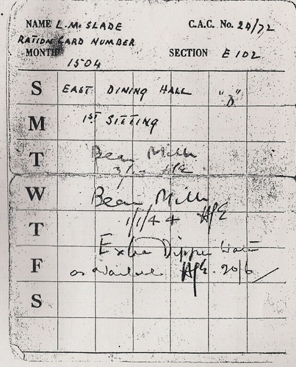
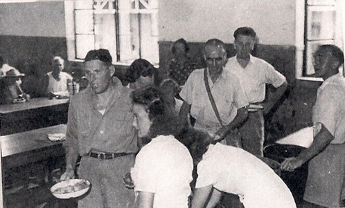
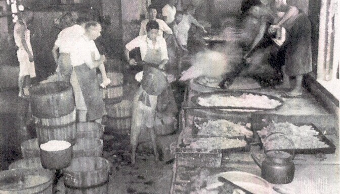
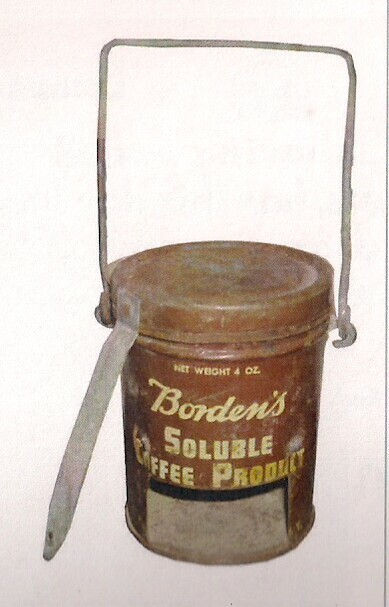

You should now be standing in front of the entrance to SHSID No.1
Cafeteria. Everyday internees would line up with their ration
cards to receive their meals. Three times a day, later only
two, they would get a plate of stewed cracked wheat or red cargo rice
topped with whatever meat or vegetables had been delivered by the
Japanese or the Swiss Red Cross. Meals were prepared by
internee work crews in two cookhouses adjacent to the cafeteria, now
demolished.


The rice was of lowest quality so it had to be sifted grain by grain by
the crews to remove debris and bugs. One unknown internee
wrote a poem on the subject:
“We got burned rice, that wasn’t rice,
like bits of festered cinders, we got boiled rice, quite spoiled rice
]and kerosene drum oiled rice.

Red Cross food parcels were a lifeline. Sent by neutral
friends or Chinese company staff in Shanghai, these boxes of canned and
dried food kept many from lapsing into malnutrition. Extra
rations would be heated on individual home-made stoves called
‘chatties,’ which also doubled as personal heaters in winter.
